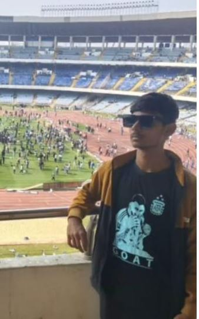

Assistant Professor & Project Supervisor · Department of Electronics & Communication Engineering (ECE)
University of Engineering & Management (UEM), Kolkata
Document Dossier & Video Proof
SFIC Submission & Video Walkthroughs.
Access full laboratory test documentation, regional Khardaha logistics pitch, and five narrated video demonstration chapters.
Demonstration Walkthroughs (5 Chapters)
SFIC Submission Dossier (Inline Previews)
1.8 MB · PDF
Preview ↗
Technical Lab Report
Complete laboratory report, sensor circuit schematics, mathematical proofs, and validation curves.
1.7 MB · PDF
Preview ↗
Project Proposal & Pitch
Executive brief, regional Khardaha supply-chain economics, pilot timeline, and budget allocations.
Dibyajyotee Ghosh
Lead Systems Architect
B.Tech ECE IEM Kolkata (CGPA 8.83). Edge AI, multi-sensor embedded pipelines & full-stack systems.
GitHub: ZG0D-FF
LinkedIn: mr-zgod

Sharmik Sen
Hardware & Sensor Lead
B.Tech ECE (UEM Kolkata). Sensor calibration, analog signal conditioning & hardware breadboard integration.
GitHub: sharmik21-ops
LinkedIn: sharmik-sen
Academic Oversight & Endorsement

Prof. Rimi Sengupta